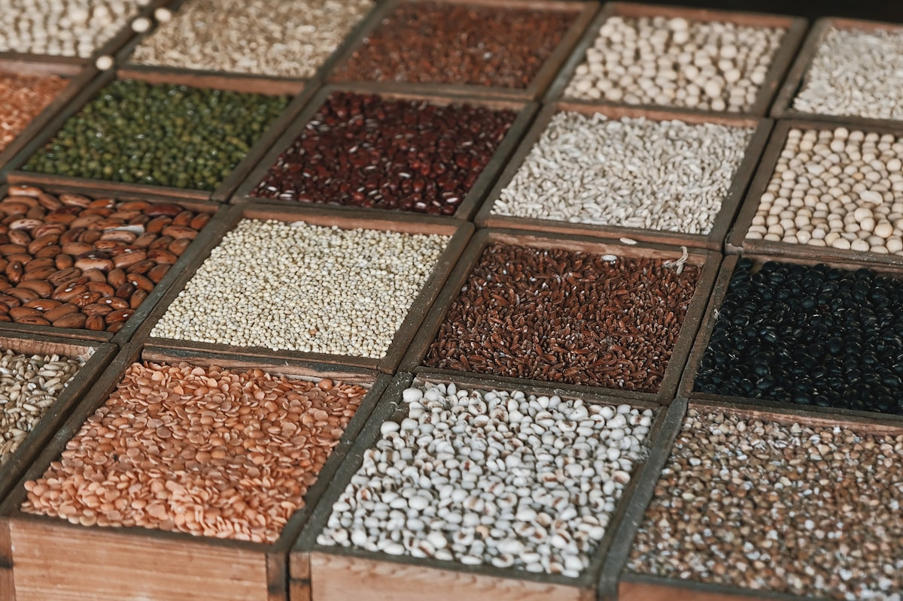

● Main Features
Unlock Freshness with Powerful
Unlock Freshness with Powerful
Features Designed for Purity,
Quality, and Trust.

Stone-Ground Wheat Flour
Milled using traditional stone-grinding techniques that preserve natural nutrients and give authentic taste.

Cold-Pressed Mustard Oil
Extracted without heat to retain all natural antioxidants, pungency, and rich flavour of mustard seeds.

Premium Quality Pulses
Hand-sorted and cleaned pulses — chana, moong, masoor, and more — free from dust and impurities.

Hand-Picked Spices
Sourced directly from spice farms, dried naturally, and packed without artificial preservatives.